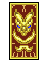
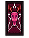
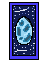
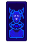
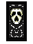
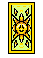
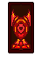

Reverso Estelar
Este reverso, es solo el inicio del caos.

Este reverso, es solo el inicio del caos.

"Cadenas invisibles forjadas con deseos dorados; el precio del poder absoluto siempre es tu libertad."
Tipo: Ofensa
Invertida:Rompes las cadenas que te atan. Te purificas de maldiciones y recuperas el control de tu estrategia.
Al Derecho:Te tienta con un poder inmenso pero peligroso. Ganas un ataque devastador a cambio de quedar encadenado al caos.

"Un reflejo de plata que deforma la realidad; un pequeño fragmento de la noche traído a la tierra."
Tipo: Ilusión
Invertida:Las sombras te confunden. Trae miedos, falsas ilusiones y hace que falles tu siguiente jugada.
Al Derecho:Ilumina los secretos ocultos en la oscuridad. Otorga intuición, misterio y una gran bonificación de evasión.

"El aleteo de las alas del destino; el juicio implacable de la diosa que decide quién reina y quién cae."
Tipo: Soporte
Invertida:Su mirada implacable te condena. Tus ventajas se congelan y tus defensas se rompen por completo.
Al Derecho: La bendición de la diosa guía tu mano. Te concede orden absoluto y ventaja permanente en combate.

"La guadaña que limpia el camino del cosmos; el final necesario para que pueda nacer un nuevo orden."
Tipo: Ciclar cartas
Invertida:El juicio del cosmos es destructivo. Estancamiento absoluto y la pérdida forzada de uno de tus planes.
Al Derecho: No es el fin, sino una transformación. Te permite eliminar una carta maldita para renovar tu mano.

"La risa desquiciada que camina al borde del abismo; el único naipe capaz de jugar con las reglas del azar."
Tipo: Caos, Cambia cartas al azar con el enemigo
Invertida: La locura se vuelve en tu contra. Una mala decisión o una broma pesada que te infringe daño a ti mismo.
Al Derecho: Impulsividad y jugadas inesperadas. Te permite arriesgarte e intercambiar una carta al azar con tu enemigo.

"La corona de fuego que disipa las sombras; un destello de gloria eterna que quema cualquier maldición."
Tipo: Soporte
Invertida: Un calor abrasador que te debilita. Trae fatiga, sequía de recursos y bloquea tus habilidades mágicas.
Al Derecho: Luz radiante y éxito absoluto. Quema al instante todos los efectos negativos y maldiciones que tengas activos.

"El eco de una carcajada que destruye imperios; el dios del desorden que convierte tu estrategia en cenizas."
Tipo: Ofensa
Invertida: : La risa burlona del dios cae sobre ti. Tu propia estructura colapsa y tus planes se queman al instante.
Al Derecho: Caos absoluto e inevitable. Destruye por completo toda la estrategia y la mesa del enemigo en un segundo.
"Desde el inicio de los tiempos, las cartas han convivido con los humanos.. o las cartas han convivido con nosotros?" —Fragmento de la revelación del Génesis.